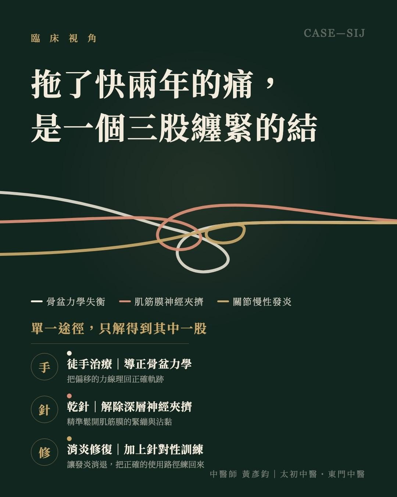
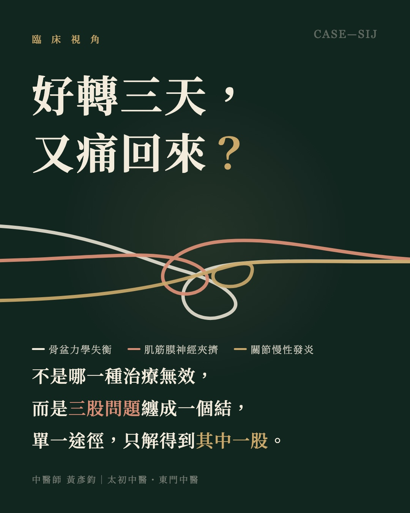

痛了快兩年，不知道該看哪一科？
【痛了快兩年，不知道該看哪一科？】－一段薦髂關節疼痛的求醫迷航
「醫師，我已經好了 95% 以上！老實說，以前也針灸過但都沒什麼感覺，真的沒想到這次看中醫會這麼有效！」
這週三的診間，一位被右側腰髂與薦髂關節（SIJ）疼痛困擾了將近兩年的患者，在第三次回診時開心地分享這個好消息。回想她初診時，從右下腹髂棘處一路痠痛延伸到右側腰髂，彎腰、下蹲起身都會引發疼痛，嚴重時得依賴肌肉鬆弛劑才能稍微緩解。前兩次療程後，她回饋說，彎腰、下蹲時會引發痠痛的角度明顯變小了；到了這次回診，她給出了開頭那句自我評估。看著她重拾久違的輕鬆感，真的替她開心。
言談中，她道出了一句無數慢性疼痛患者的心聲：「會痛這麼久，有一部分原因是根本不知道這到底要看什麼科。」
這快兩年來，她幾乎把能想到的管道都試過一輪：復健科、物理治療、針灸，甚至民俗調理與推拿。但每次抱著希望去，總是好個兩三天又慢慢痛回來。當疼痛反覆消磨了快兩年，那種「到處求醫卻找不到出口」的無助感，往往比疼痛本身更令人沮喪。
▍為什麼看了這麼多地方，疼痛卻依然原地踏步？
臨床上，薦髂關節的疼痛成因相當多元：有些來自周邊力學結構的失衡，有些是肌肉筋膜緊繃造成的疼痛，也有些是關節本身與韌帶的受損或發炎。拖了快兩年的頑固疼痛，問題通常早已不是單一組織的拉傷，而是這幾個因素纏在一起，變成複合型的「結構與神經死結」。
評估這位患者時發現，她的狀況正好同時涵蓋三個層面：骨盆錯誤的生物力學模式、深層肌筋膜造成的局部神經夾擠，以及薦髂關節與韌帶的長期慢性發炎。
這也解釋了為什麼先前的治療總是差一步。不是哪一種治療無效，而是當三股問題纏成一個結，任何單一途徑都只解得到其中一股：放鬆了表層肌肉，力學軌跡沒校正，關節動起來依然在摩擦；處理了發炎，深層的神經夾擠沒解除，疼痛訊號就持續作響。好轉兩三天又痛回來，往往就是這個原因。
所以這次的療程不走單一途徑，而是把這個結的三股線一次拆開：以徒手技術導正骨盆的力學結構、用乾針精準解除深層肌筋膜對神經的夾擠，再讓薦髂關節與韌帶深處的慢性發炎逐步消退、組織得以修復。
而疼痛解除之後，要真正告別反覆發作的循環，還需要一套完整的修復邏輯：結構障礙的排除、肌肉神經控制的重置，最後搭配針對性的訓練，讓身體重新學會正確的使用路徑。這才是完整的「修復三部曲」。
💡 臨床隨筆：重新認識「看中醫」這個選項
很多患者在漫長的求醫迷航後，會誤以為自己的身體「沒救了」，或是給某種醫療體系貼上「沒效」的標籤。但其實，不是問題無解，也不是哪種治療沒用，而是面對複雜的結構力學問題，需要的是精準的評估診斷，與跨領域的整合技術。
把扎實的解剖學與生物力學放進中醫針傷的臨床思維裡，中醫不只能調理，更能精準找出病根，為迷航已久的疼痛患者，指出一條走得通的路。
（以上為單一個案的治療經過與患者自述，實際療效因個人狀況而異，仍需由醫師評估。）
太初中醫診所 東門中醫診所
中醫師 黃彥鈞
#薦髂關節 #慢性疼痛 #乾針 #徒手治療

